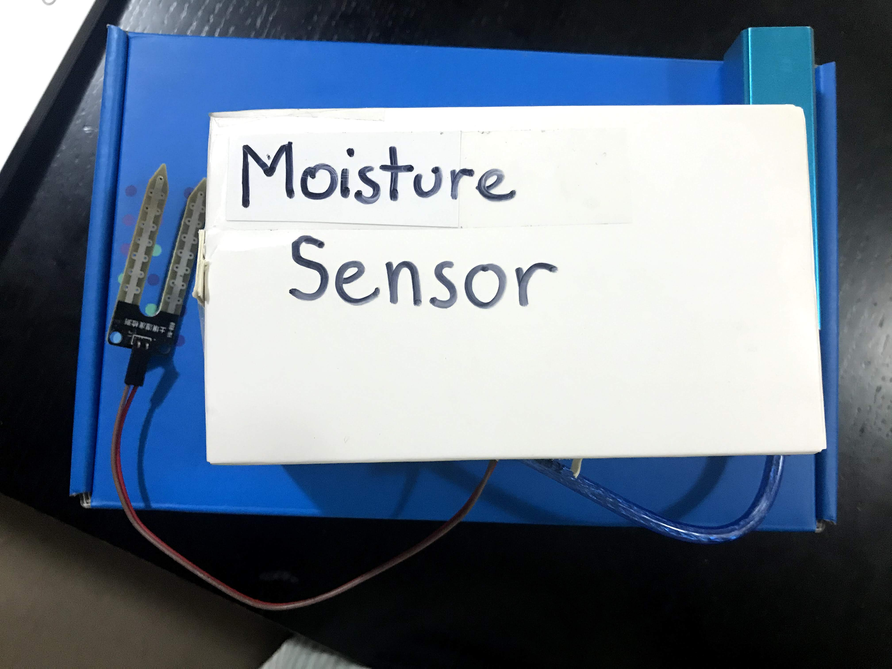
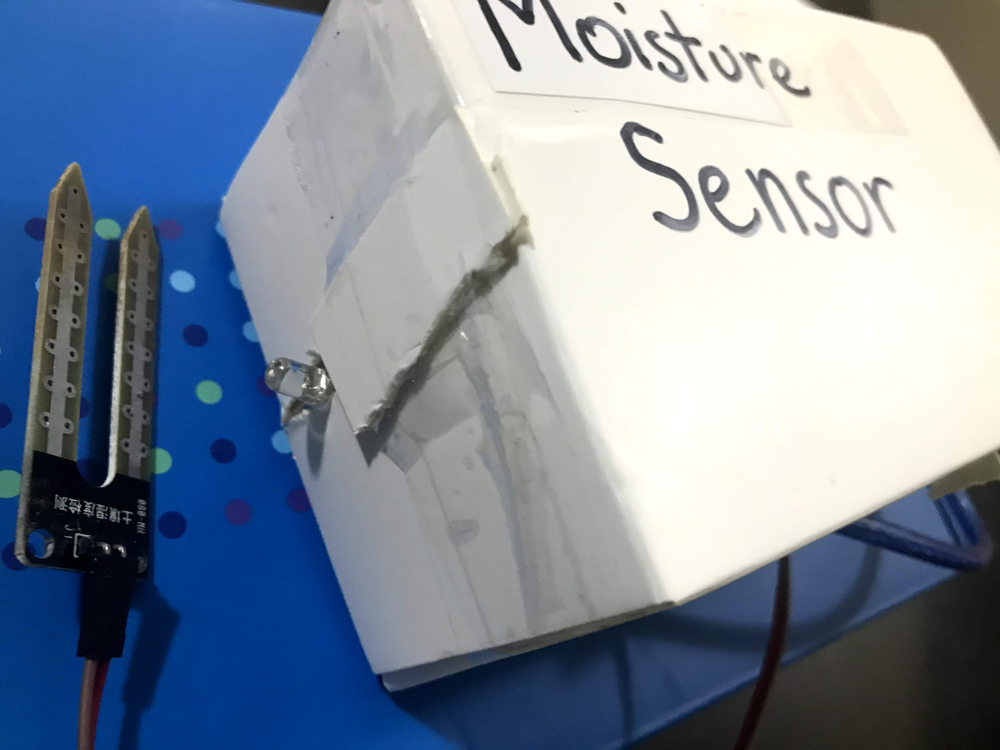
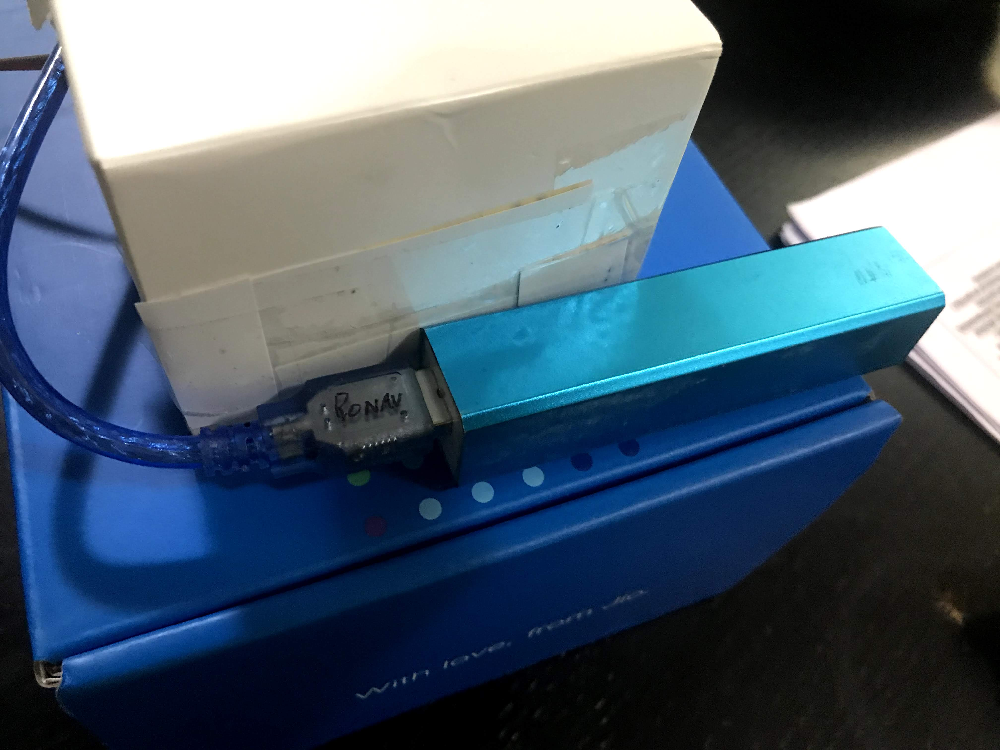
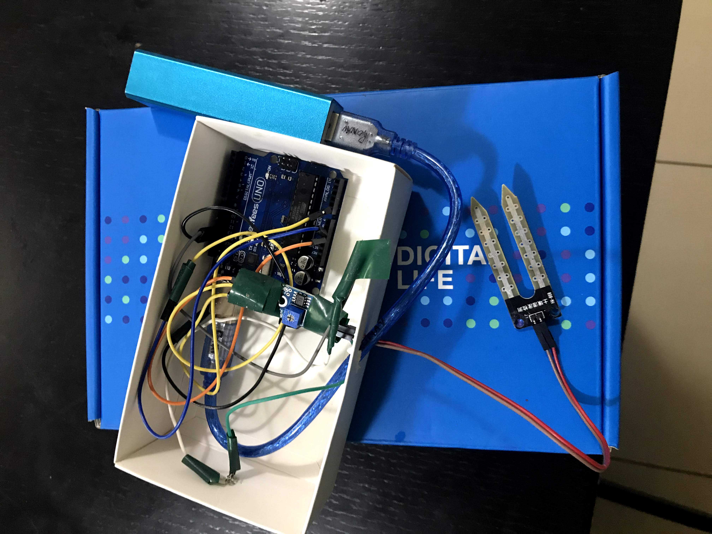

My project was to create a moisture sensor for plants, this will help measure the moisture level of the soil and hence be able to save the amount of water that you will need to keep the plant alive and grow healthy.
It has been found that a moisture level of 30% is enough to keep a plant alive and healthy, In my project, I will create a system that will check the moisture level of a potted plant and inform the user when the moisture level is below 30. It is a signal for the user to water the plant and hence keep the plant healthy.
Picture 1: Circuit Diagram Design for the Soil Moisture project

Picture 2: Finished Product before boxing.

Picture 3: Finished box for the Soil Moisture Sensor

Picture 4: Water Sensor and Light indicator when the moisture level is measured to be higher than needed

Picture 5: Battery Setup to power the Soil Moisture setup

Picture 6: FInished product inside the box
This product helps lower your water usage. Everyday many people waste water by watering their plants when it is not needed. By using this product you will be saving around 3% water of your total water consumption per day per plant, if you have many plants at home - these savings would be bigger.
Online resources for 'Why do we need to conserve water?' - Link
If you have any questions regarding my project, please contact me at RonavKiran@live.com